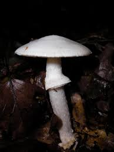
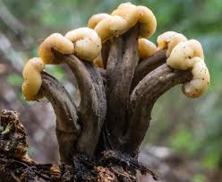
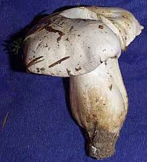
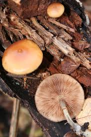
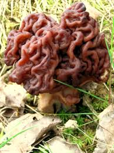
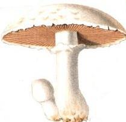
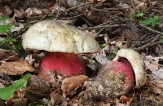
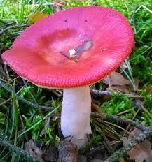
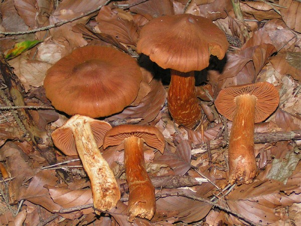

Ce grand champignon aux couleurs vives est pourtant dangereux. Les espèces toxiques ont un pied assez long et des lamelles blanches
libres sous le chapeau.
La consommation de ce champignon provoque un état de pseudo-ébriété suivi d'une phase de déprime puis d'hallucinations, de crises hilarantes,
plongeant ensuite l'intoxiqué dans un sommeil profond. Son surnom, "tue-mouches", n'est pas usurpé et les anciens ne l'ont pas oublié :
quelques-uns utilisent encore une préparation très efficace dont l'origine se perd dans la nuit des temps !
En bref : ne tentez pas le diable, et ne mangez pas leurs spores colorées, ou vous risquez vite de voir
apparaître une horde de Schtroumpfs en colère !
Ce grand champignon aux couleurs vives est pourtant dangereux. Les espèces toxiques ont un pied assez long et des lamelles blanches
libres sous le chapeau.
La consommation de ce champignon provoque un état de pseudo-ébriété suivi d'une phase de déprime puis d'hallucinations, de crises hilarantes,
plongeant ensuite l'intoxiqué dans un sommeil profond. Son surnom, "tue-mouches", n'est pas usurpé et les anciens ne l'ont pas oublié :
quelques-uns utilisent encore une préparation très efficace dont l'origine se perd dans la nuit des temps !
En bref : ne tentez pas le diable, et ne mangez pas leurs spores colorées, ou vous risquez vite de voir
apparaître une horde de Schtroumpfs en colère !
 Ce champignon toxique ressemble à des nombreuses espèces comestibles , il apparaît après une période de pluie de la fin de l'été jusqu'en automne.Il présente un corps large large avec un chapeau de 5 à 15 cm, rond qui s'applatit avec l'âge ; le pied est blanc,chiné de gris, long de 8 à 15 cm et épais de 1 à 2 cm, avec a sa base une volve blanche . Plus connu sous le nom d'Amanite phalloïde, ce champignon est souvent la cause de graves empoisonnements humains. Beaucoup plus dangereux que son homologue rouge à poids blancs, le calice de la mort provoque des pressions et hémorragie intracrâniennes et des septicémies, tout en entraînant des dégâts irréversibles sur les reins. Dans certains cas, sa consommation peut même causer un arrêt cardiaque sous une quinzaine de jours.
 Tout comme le bolet de Satan, ce champignon blanc mortel prévient d’emblée de sa toxicité : la forme insolite du Cudonia Circinans incite à la méfiance, par son repli douteux ; le champignon se développe volontiers sous les conifères, entre août et septembre, en replis spongieux aux allures… de cortex, dans une palette du crème au beige. Prenez au sérieux l’avertissement et ignorez-le lors de vos balades en forêt. Pourquoi ? Et bien déjà car la substance qu’il contient sert dans la fabrication du combustible à fusée. Ainsi, une fois ingéré, le Cudonia circinans se transforme en poison mortel pour l’être humain, avec un délai extrêmement court entre les premiers symptômes et la mort. Si jamais vous avez des doutes au retour d’une balade dans les bois, attendez avant de consommer et demandez l’avis d’un spécialiste.
 L’entolome livide est un champignon hautement toxique : sa consommation entraîne de gros troubles digestifs (nausées, vomissements, diarrhées et déshydratation), jusqu’à la mort chez les personnes les plus fragiles. Faites donc attention lors de vos cueillettes, car l’entolome livide est trompeur : il est très facile de le confondre avec d’autres espèces de champignons comestibles. En effet ; on la confond d’autant plus facilement avec le Clitocybe nébuleux (Clitocybe nebularis), espèce comestible, qu’elle pousse parfois en cercle, comme lui, et se maintient tard en saison, jusqu’aux premières gelées. Seule la couleur des lames permet alors de différencier ces deux champignons : roses pour entoloma lividum, blanches pour le Clitocybe nébuleux.
 Cette Galère est un champignon mortel qui contient le même poison que l'amanite, un champignon à parfaitement connaître donc puisque la Galère marginée à la réputation d'être le sosie, la copie conforme de la Pholiote changeante . De plus, la Pholiote changeante ne présente pas cette odeur de farine de la Galère, bien mise en évidence par le froissement d'un petit morceau du chapeau et des lames de la Galère. Les sporophores de ce champignon sont bruns à beiges, perdant leur couleur au séchage; les lames sont brunâtres et donnent une impression de spores rouillées . La galère marginée est souvent confondue avec la Pholiote changeante comme dit précédement ce qui est un peu bête puisque l'un te tue et l'autre te régale.Elle peut provoquer des lésions hépatiques sévères accompagnées de trouble digestifs et , dans certains cas, entraîner une hypothermie et la mort .
 Annectdote : Ce champignon a d’abord été considéré comme comestible. Il a fallu attendre les années 60 pour en découvrir la toxicité. Il contient de la gyromitrine. Cette toxine est en partie détruite par la cuisson et la dessiccation. Comme son nom l'indique, la fausse morille n'est pas comestible, contrairement à la vraie qui passe vraiment bien à la crème pour accompagner un rôti de veau par exemple. Malgré tout certains pays nordiques en vendent sur leurs marchés car sa toxicité dépend du climat dans lequel il pousse et une fois bien bouilli il subsiste peu de risques. L'aspect particulier de Gyromitra esculenta, cervelle brune sur un pied blanc, laisse peu de place aux confusions avec d'autres genres, excepté avec les Morilles. Mais le chapeau de celles-ci est nettement alvéolé et non plissé avec des côtes fines et marquées séparant les alvéoles.
 Le lepiota helveola ou lépiote brune est un champignon toxique dont sa hauteur ne dépasse pas sept centimètres ; il n'y a donc aucun risque de confusion avec les grandes espèces de Lépiote . Son chapeau est ocré, sa chair est légèrement rosée. les champignons toxiques de la famille des lépiotes se développent de dunes en taillis, dans les prés, les bois, les parcs et jardins, ou même les décombres. Partout, donc… Et leur look très commun n’aide en rien à les différencier, en blancs et bruns plus ou moins tachetés. On ne le répétera donc jamais assez, ne cueillez pas sans certitude, ou portez tout simplement votre panier à un spécialiste, voire à votre pharmacien !
 Peu de surprise avec un nom pareil. Les bolets de Satan ressemblent à des cèpes, mais leur couleur ne trompe pas. Ce Champignon au pied rouge vif est très impressionnant. Ce champignon généralement solitaire est un toxique sévère à l'état cru, provoquant de sérieuses gastro-entérites pouvant durer plusieurs jours. Il est comestible pour certains, après une longue cuisson ... Pour d'autres, quelques troubles digestifs ont, malgré tout, été observés : il est donc préférable de l'éviter.
 La Russule émétique pousse à partir du millieu de l'été et jusqu'à l'automne. Elle est composé d'un chapeau de 3 à 10 cm, convexe puis applati , rouge cerise vif . Les lames et ses sporées sont blanches vec un pied blanc d'une longueur de 5 à 9 cm. On la retrouve surtout sous les confères . Si l'on parvient à la consommer , elle peut créer des troubles gastro-intestinaux et comme son nom l'indique, des vomissements. Attention : la confusion est possible avec d'autres membres de la famille dont la russule jolie et la russule du hêtre .
 Trompeur n'est-ce pas ? Qui aurait cru que ce nom avec cette touche de douceur pouvait cacher un champignon mortel ? La singularité de ce champignon réside dans sa "cortine", une sorte de voile fin pâle reliant le chapeau du champignon à son pied. Le cortinaire se décline en plusieurs variétés, des champignons commestibles et toxiques. Il est ipossible de les distinguer à la couleur : Encore une fois , essayer de faire vérifier votre panier par un pharmacien ou tout autre spécialiste. Vous pourrez ainsi être-sur qu'aucun intrus ne se dissimule dans votre panier . D'autant plus qu'il n'existe aucun antidote pour sa toxine. L'ingestion de ce champignon toxique roux peut provoquer l'arrêt du fonctionnement des reins, puis la mort !